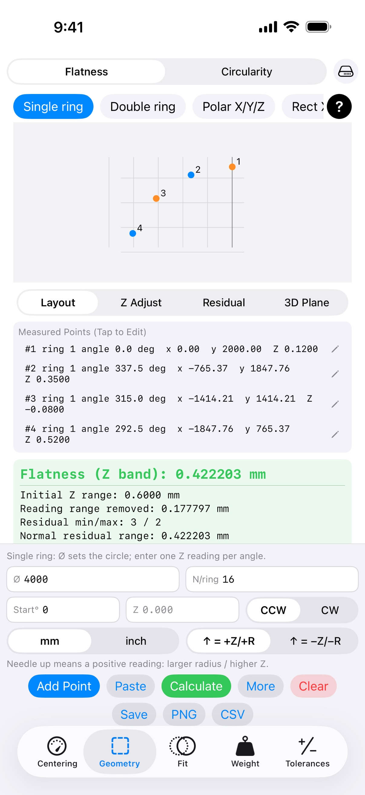
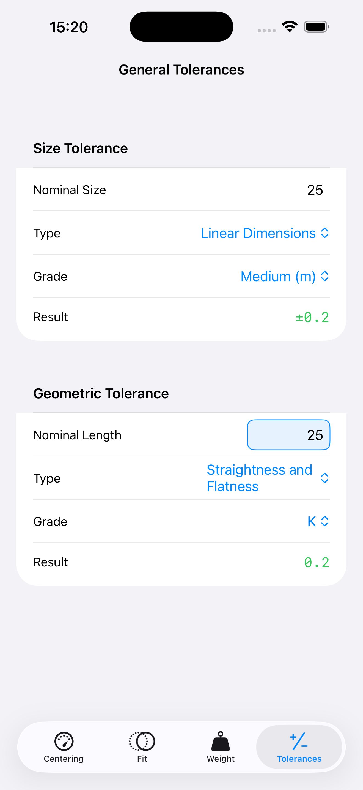

Planéité et circularité — sans l'aller-retour au tableur.
Le flux de travail classique est connu : noter les relevés au comparateur, retourner au PC du bureau, ouvrir la macro Excel, lancer Solver, recopier les chiffres dans le rapport. CNC Workpiece Calculator 1.0.2 met toute cette boucle dans votre poche — un solveur de zone minimale pour la planéité et un ajusteur de circularité à trois méthodes qui tournent sur l'appareil en moins d'une seconde, aux côtés des outils de centrage, ajustements ISO, tolérances et poids déjà présents.
Pour le réglage et le contrôle CNC, les ateliers de sous-traitance, les ingénieurs qualité et la formation. Tout tourne hors ligne sur iPhone et iPad — sans compte, sans pub, sans suivi, sans réseau.


Geometry NOUVEAU DANS 1.0.2
La planéité et la circularité sont là où le contrôle devient pénible. La mesure elle-même prend deux minutes au comparateur — c'est le calcul qui tue le travail : un problème de zone Z minimale que personne ne résout à la main, généralement délégué à une macro Excel avec Solver qui vit sur un seul PC, gardée par des verrous de fichiers et des avertissements de macros.
| Étape | Excel + Solver | CNC Workpiece Calculator |
|---|---|---|
| Saisir les relevés | Taper dans une grille sur le PC du bureau | Pavé numérique dédié à la machine, iPhone ou iPad |
| Planéité | Lancer Solver et espérer des réglages de convergence corrects | Simplexe LP en deux phases, instantané, avec état de convergence affiché |
| Nivellement | Dériver les cales à la main depuis l'équation du plan | Conseils de nivellement point par point avec gain prévu |
| Circularité | Une convention de classeur, une seule réponse | Ajustements algébrique, géométrique et zone minimale côte à côte |
| Rapport | Capture d'écran du tableur | PNG en un geste (graphique + résultats) ou CSV |
Trois ajustements de cercle, honnêtement nommés
Moindres carrés algébriques, meilleur ajustement géométrique et recherche de zone minimale par Nelder–Mead tournent ensemble. La différence de diamètre compatible Excel et la plage radiale en zone minimale, plus serrée, sont reportées séparément — fini les disputes entre anciennes et nouvelles conventions.
Six vues graphiques
Disposition, écart ×10, résidus, plan 3D, contour et zoom centre — basculez en direct pendant la saisie des points. Les points sélectionnés sont surlignés et la vue s'adapte à vos données.
Un export qui colle au flux de travail
Un geste génère un PNG 1200×800 avec le graphique et un panneau de résultats, directement dans Photos ou la feuille de partage. Les points s'exportent en CSV. Les sessions enregistrées se rechargent depuis le panneau Plus.
Tout le reste qu'il fait
L'onglet Geometry rejoint les outils que l'app embarquait déjà — tout hors ligne, tout sur l'appareil.
Centrage par palpeur
Saisissez les points X/Y mesurés (avec compensation du diamètre du palpeur) et calculez le centre/la géométrie pour cercle, rectangle, ellipse, rainure droite et double cercle.
Ajustements arbre–alésage
Vérifiez rapidement la taille nominale + les classes de tolérance (ex. H7/h6) et visualisez le résultat de l'ajustement en choisissant les types courants d'alésage/arbre.
Tolérances générales
Référence des tolérances dimensionnelles et géométriques (rectitude/planéité, perpendicularité, faux-rond circulaire, etc.) avec des résultats clairs pour l'atelier.
Estimation du poids
Estimez le poids des formes courantes (plaque, tube, barre, anneau…) avec préréglages de matériaux, quantités et unités métriques/impériales.
Conçu pour les mains gantées
Un pavé numérique dédié avec remplacement au premier geste, inversion de signe et défilement auto — plus de lutte contre le clavier système en pleine mesure.
Hors ligne & privé
Sans compte, sans pub, sans SDK de suivi. Les sessions restent sur l'appareil. Ça marche dans les réseaux d'atelier restreints parce que ça n'a jamais besoin de réseau.
Tutoriel rapide
Cinq flux de travail — geometry, centrage, ajustements, poids et tolérances.



Pour qui ?
Ateliers & réglage CNC
Centrage, ajustements et contrôles géométriques rapides sans retour au PC du bureau.
Qualité & contrôle
Zone minimale pour la planéité et la circularité avec des conventions honnêtement nommées — et un rapport PNG à joindre.
Formation
Montrez aux nouveaux opérateurs ce que le nivellement récupère réellement, et à quoi ressemble le plan ajusté.
Questions fréquentes
Peut-il remplacer ma macro Excel de planéité avec Solver ?
Pour l'atelier, oui — l'onglet Geometry résout le même problème de bande Z minimale avec un solveur simplexe LP en deux phases, sur l'appareil, en moins d'une seconde. Il reporte la valeur de planéité, la plage initiale, le gain par nivellement, le plan ajusté et les conseils point par point. Pour une documentation d'audit, exportez les points en CSV et traitez-les dans vos propres outils.
Quelle valeur de circularité est reportée — l'ancienne différence de diamètre ou la zone minimale ?
Les deux, volontairement séparées : la différence de diamètre au centre algébrique (la convention classique du classeur) et la plage radiale en zone minimale (la valeur plus serrée, conforme aux normes).
Comment saisir les relevés au comparateur pour la circularité ?
Passez en mode Comparateur, entrez comme Référence Ø le diamètre où le comparateur indique zéro, puis saisissez chaque relevé signé. Le réglage du signe du cadran correspond au montage de votre comparateur (aiguille en haut = rayon plus grand ou plus petit).
Sur quoi se basent les conseils de nivellement ?
Sur le plan ajusté en bande minimale. Pour chaque point mesuré, l'app montre la correction de corps rigide proposée et le résidu prévu après correction — le gain attendu du calage ou du re-nivellement seul, avant tout usinage.
Puis-je exporter les résultats pour mes dossiers qualité ?
Oui. Un geste génère un PNG 1200×800 contenant le graphique et un panneau de résultats surligné, enregistré dans Photos ou la feuille de partage. Les points mesurés s'exportent en CSV.
L'app nécessite-t-elle Internet ?
Non. Tous les calculs, graphiques, sessions enregistrées et exports fonctionnent hors ligne.
Collecte-t-elle des données ?
Aucun SDK d'analyse ou de suivi n'est utilisé. Consultez la politique complète sur la page Confidentialité.
Puis-je l'utiliser sur iPad ?
Oui — l'interface est conçue pour les flux iPhone et iPad.
Où signaler un bug ou demander une fonctionnalité ?
Écrivez à wangning.engineer@outlook.com.
Télécharger
Prêt à l'utiliser sur le sol de l'atelier ?